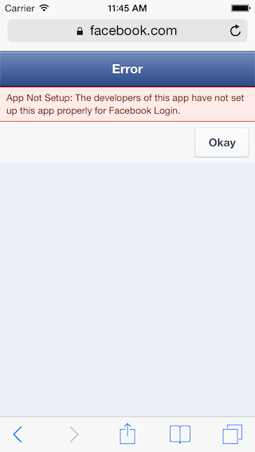
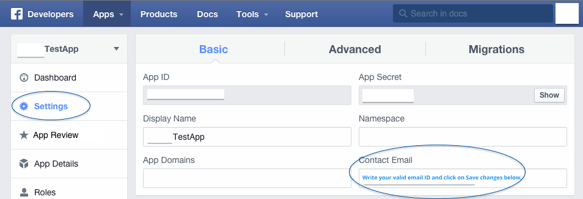

The developers of this app have not set up this app properly for Facebook Login?
I'm trying to make a login with Facebook available in my script. I've done everything, but when I attempt to login with a Facebook account I get this error from Facebook:
Error
App Not Setup: The developers of this app have not set up this app properly for Facebook Login.
Here's error screenshot:

Any ideas?
Answer
the problem was you have to set
Do you want to make this app and all its live features available to the general public?
set status and review to ON and problem solved
enjoy coding
Suggest
With respect to the all the other answers, here's the screenshot to help someone.
- Go to https://developers.facebook.com/
- Click on the Apps menu on the top bar.
- Select the respective app from the drop down.

The circle next to your app name is not fully green. When you hover mouse on it, you'll see a popup saying, "Not available to all users because your app is not live."
So next, you've to make it publicly available.
- Click on setting at left panel. [see the screenshot below]

- In Basic tab add your "Contact Email" (a valid email address - I've added the one which I'm using with developers.facebook.com) and make "Save changes".
- Next click "App Review" at left panel. [see the screenshot below]
- Look for this, Do you want to make this app and all its live features available to the general public? and Turn ON the switch next to this.

- That's it! - App is now publicly available. See the fully green circle next to the app name.